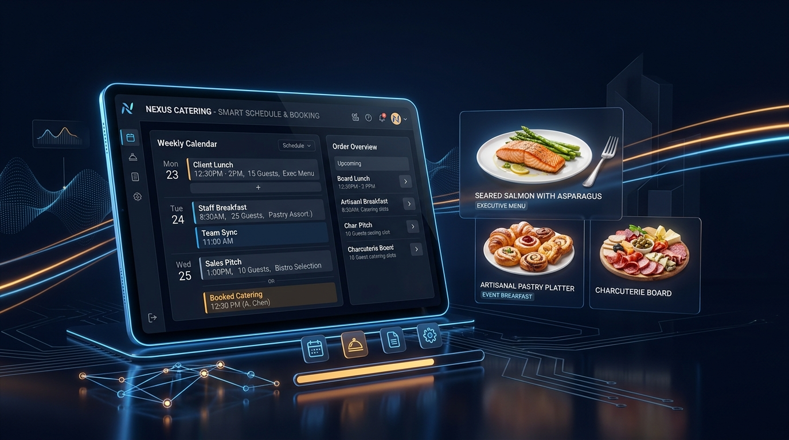

Sistema centralizado para la coordinación de turnos de locales, pedidos gastronómicos diarios y control de producción en tiempo real.

Cómo transformamos el flujo de trabajo entre la cocina central y los locales de la empresa.
Separación estricta entre control administrativo y consulta operativa de locales.
Diseñado para la Gerencia de Operaciones y Planificación.
Diseñado para encargados de sede, mozos y cocina.
Cada evento en el calendario incluye la orden de preparación lista para cocina.
Selección precisa del plato de fondo (Pollo, Pescado, Lomo, Cerdo o Vegetariano).
Definición de carbohidratos (arroz, puré, papas) y tipo de ensalada fresca o cocida.
Conteo exacto de platos, requerimiento de servilletas y notas especiales para la sede.
🎯 Impacto Operativo: La cocina ya no recibe pedidos verbales ni notas extraviadas; toda la demanda del día está consolidada en una sola pantalla.
La herramienta definitiva para la previsión de insumos y logística de compras.
Gráfico de barras interactivo que mapea los 31 días del mes seleccionado.
Eliminación definitiva del problema de desplazamiento de días en eventos nocturnos.
Configuración nativa con America/Lima en todo el ciclo de vida del dato.
Los eventos de las 19:00 a 23:59 horas permanecen en la fecha correcta sin saltar al día siguiente.
Cálculo uniforme independientemente de la zona horaria del celular o laptop del usuario.
Protección activa en base de datos, servidor y navegador.
Imposible alterar o borrar datos desde internet sin sesión de administrador.
Los PINs nunca se exponen al navegador. Validación segura en servidor con SHA-256.
Bloqueo de 30 segundos tras 5 fallos consecutivos para evitar bots.
Tecnologías líderes en el mercado garantizan disponibilidad ininterrumpida.
Frontend desplegado en CDN global con tiempos de carga inferiores a 1 segundo en todo el país.
Motor PostgreSQL con WebSockets: los cambios se replican en pantallas abiertas sin recargar.
Respaldos diarios automatizados con opción de restauración inmediata ante cualquier contingencia.
Beneficios cuantificables desde el primer día de puesta en marcha.
Compras exactas de carnes e insumos gracias a la previsión cuantitativa del Resumen Mensual.
Fin de pedidos duplicados, mensajes perdidos en chats y reclamos por horarios incorrectos.
Registro histórico de cada turno, local y menú despachado para auditorías y control interno.
La plataforma se encuentra completamente testeada, blindada contra vulnerabilidades y lista para recibir la carga completa de datos de la empresa.
Autenticación Google, PINs, RLS y zona horaria validadas al 100%.
Manual de usuario, informe de seguridad y acta de entrega listos.
Soporte y acompañamiento continuo post-lanzamiento.
Gracias por su confianza. ¿Preguntas o demostración en vivo?